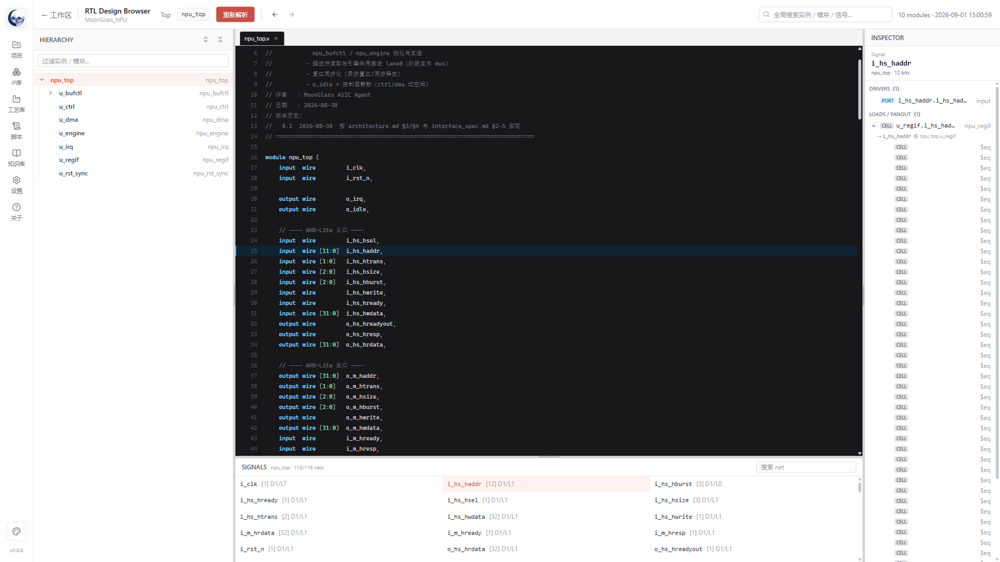
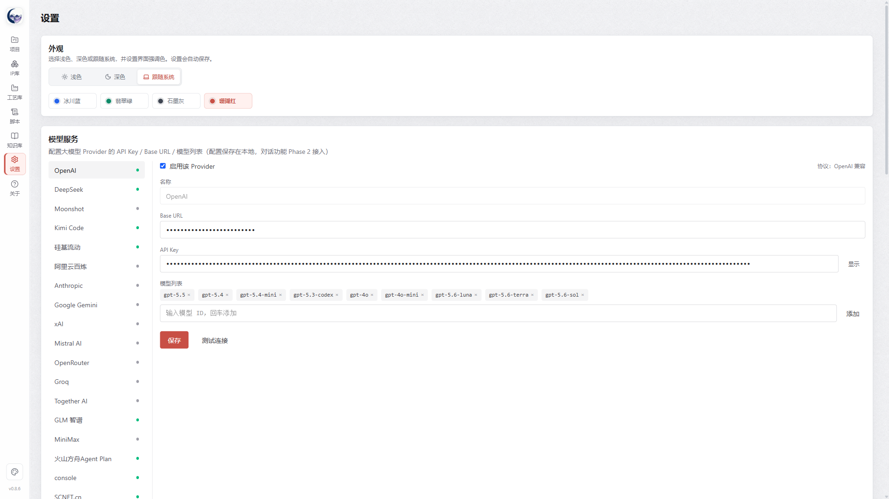
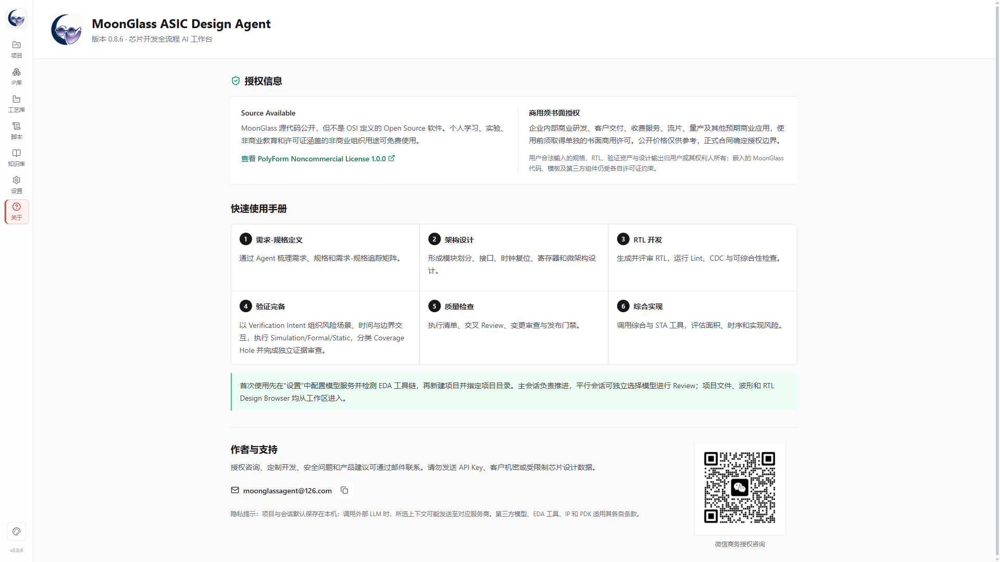

| 维度 | v0.6.0 及以前 | v0.8.6 |
|---|---|---|
| 验证方法学 | 验证计划 + 测试用例 + 覆盖计划文档 | AIGV 2.0：Spec Gap / Intent / Scenario / Coverage Hole / Residual Risk / 签核包全证据链 新增 |
| 验证组织 | 按阶段推进 | W0-W3 验证波段 + 全屏验证态势视图，推荐动作直达风险与批次 新增 |
| 验证执行 | 单会话长对话 | 场景聚类批次隔离执行、批次里程碑、读取纪律与根因工具 新增 |
| EDA 闭环 | Lint / 综合 / 简单 CDC | Cocotb 回归、Icarus、Verilator 覆盖率、Yosys Formal + Boolector BMC，结构化证据归档 增强 |
| RTL 浏览 | 基础层次树 + 信号列表 | 类 Verdi 重构：三栏布局、源码主视图、跨层次 Driver/Load 逐层追踪 重构 |
| 模型体验 | 单模型对话 | 平行会话独立选模、上下文压缩/无上下文重启、停滞提示、错误语义化、切模型探活 新增 |
| 长任务治理 | — | 一键托管等待 Agent 真正结束、阶段切换不打断后台任务、事件按会话路由 新增 |
一、六阶段开发引擎
每个芯片项目沿六阶段状态机推进，阶段产物、门禁检查和 Agent 会话按阶段隔离；前序变更自动向已完成阶段传播影响标记。
阶段门禁
每阶段有确定性门禁检查（产物存在性、规范校验、可追溯性），未通过不得推进；门禁失败可一键"交给 Agent 修复"。
变更影响传播
后期改需求/修 Bug 时，从最早受影响阶段重走流程，已完成阶段自动加黄色提醒，保留全部前后证据。
一键托管
自动调用 Agent、处理推荐选择、执行门禁与有限次数修复重试；门禁持续失败即停止，绝不强行标绿。

二、AIGV 2.0 验证方法学 v0.8 系列核心
AIGV（AI-Guided Verification）把"验证是否做完"从感觉变成证据链：以规格条款为起点，以签核包为终点，每个环节都可追溯、可裁决。
RTL 结构分析驱动
对 RTL 做 FSM、CFG、COI、共享状态交互分析，生成 807+ 结构事实与 38+ 风险标记，按风险产出验证候选，而不是拍脑袋列用例。
经验性饱和判定
Novelty Saturation 判断新增场景是否还在发现新行为；配合场景裁决与独立证据 Review，避免"跑了很多但没验到点子上"。
三、W0-W3 验证波段与验证态势 v0.8.6
验证操作按四个波段组织，全屏"验证态势"视图展示最高风险、Intent 闭环、规格缺口、覆盖空洞、测试执行与签核状态，推荐动作直接关联到具体风险和批次。
验证计划、覆盖率计划、环境搭建与基础回归；产出风险候选并登记验证意图。
每条可验证规格条款至少一条 happy path，规格映射矩阵逐条关闭。
按风险优先级执行并发碰撞、错误注入、恢复路径等 corner 场景。
覆盖率收敛、残余风险评估、证据包整理与签核建议。

四、验证执行与上下文治理 v0.8.5-0.8.6
批次隔离执行
场景按聚类形成批次，派发到独立平行会话执行，记录批次里程碑；批次熔断（证据缺失 / watchdog / 诊断无进展）即停止后续批次。
上下文治理
验证摘要入口、读取纪律、根因工具与批次裁决，把长会话的上下文膨胀压到最低；阶段会话相互隔离，压缩与无上下文重启随时可用。
托管真正等待结束
一键托管等待 Agent 真正 settled 后才检查门禁与推进，不再提前推进造成误判。
后台任务不中断
阶段切换不再强制中断后台验证；事件按会话路由，后台批次完成/失败主动通知。
五、EDA 工具链与证据闭环
| 能力 | 工具 | 产出证据 |
|---|---|---|
| RTL Lint | Verible / Verilator | 结构化诊断，可一键交 Agent 修复 |
| 仿真回归 | Cocotb + Icarus Verilog | JUnit 结果、日志、FST 波形 |
| 覆盖率 | Verilator Coverage | 覆盖报告与 Coverage Hole 分析 |
| Formal | Yosys + Boolector BMC | 证明结果；兼容性预检区分 RTL 缺陷与工具限制，不虚报 |
| 逻辑综合 | Yosys（支持目标 Liberty） | 网表、面积/时序报告、SDC |
| 波形查看 | GTKWave（双击 .fst/.vcd） | 信号波形 |
仿真、JUnit、覆盖率、Formal、Lint、综合结果统一结构化归档到 verification/results/ 与 imp/，成为 AIGV 签核的原始证据。
六、RTL Design Browser v0.8.6 重构
参考 Verdi 使用范式重构：源码浏览器成为主角，支持跨层次 Driver/Load 逐层展开追踪、多文件 Tab、导航历史与全局搜索。三栏均可拖拽调整、不可关闭。
DESIGN HIERARCHY
SOURCE · rtl/npu_mac.v
INSPECTOR
类 Verdi 追踪
选中信号后 Driver/Load 沿层次边界逐层展开，跨模块一路追到源头或全部负载。
交叉定位
层次树、信号列表、源码标识符三方互通；单击选中、双击跳定义、双击实例名下钻。
复杂工程解析
基于 Yosys elaboration，支持 design.json 语义结构、filelist、宏 blackbox 视图与中文路径。


七、Agent 工程体验
内嵌 Pi Coding Agent（RPC 模式），主会话与平行会话可独立选择并恢复模型；工具调用、思考过程与结果流式呈现，失败项默认展开。


上下文生命周期
上下文压缩、无上下文重启、Token/缓存/上下文占用统计，长会话不再失控。
模型服务韧性 v0.8.6
停滞 120 秒提示、裸错误语义化（402→余额不足、429→限流…）、切换模型先探活失败自动回滚、执行中禁止切模型。
执行看门狗
检测重复读写循环并自动熔断或要求收敛；批次会话同语义。
八、项目与变更管理
已有项目导入
扫描现有工程目录的文档、RTL、验证与综合证据，给出建议恢复阶段与识别依据，写入 import_assessment.md，不强制改造原文件树。
阶段产物治理
阶段产物支持归档重做、彻底清除与项目迁移；重做不丢历史，审计链完整。
IP 智能库
递归发现 RTL IP / VIP / BFM，Pi 语义增强补充协议与接口角色，设计阶段可被 Agent 检索复用。
本地优先
项目数据存本机 SQLite + JSON；绿色版用户数据在 userdata/ 内，API Key 不随包分发。

九、授权与支持

九、开箱与验证结果
Release 提供 Windows x64 完整绿色版：解压后运行 MoonGlass.exe 或 Start-MoonGlass.bat，无需安装；内置 MIC_NPU 演示项目、Pi Coding Agent 0.84.1 与 AIGV 开源工具链。
相关链接
- 下载：GitHub Release v0.8.6（含绿色版与 SHA-256）
- 上手：傻瓜式使用说明书 · 工程实用手册
- 方法学：AIGV 验证方法学 · 长时 Agent 工程学